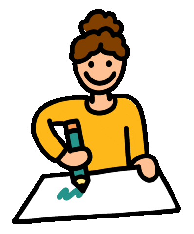

Drawing
I have a skill in drawing because I have always had a passion for art and creativity. From a young age, I have enjoyed expressing myself through drawing and painting, and I have spent countless hours practicing and refining my skills. I find that drawing helps me relax and express my emotions and thoughts in a creative way. I am constantly learning and improving, and I enjoy exploring different styles and techniques. Drawing is an important part of my life and I am always looking for ways to improve and share my work with others.
From a young age, I have been fascinated by the power of visual expression and the endless possibilities it offers. I have taken various art classes and workshops throughout my life, and I have dedicated myself to practicing and improving my skills. Drawing allows me to express myself in a way that words cannot, and I find it to be a deeply fulfilling and therapeutic activity. Whether I am creating a detailed portrait or a quick sketch, I am always excited to see what my imagination can bring to life on paper.
I have always been interested in creating art and expressing myself through visual media. I have taken art classes and practiced regularly, which has helped me develop my technique and style. I enjoy experimenting with different mediums and techniques, and I am always looking for ways to improve and expand my artistic abilities. Drawing is a hobby that allows me to relax and escape from the stresses of everyday life, and I find great satisfaction in creating something beautiful and meaningful through my art.
I have always been interested in art and have a natural talent for it. I have been practicing and improving my skills for many years, and have even taken art classes to further develop my abilities. Drawing allows me to express myself creatively and to capture the world around me in a unique and personal way. I find it relaxing and enjoyable to sit down with a pen or pencil and a blank sheet of paper and let my imagination run wild. It is a skill that I am proud of and one that I hope to continue improving and using for many years to come.